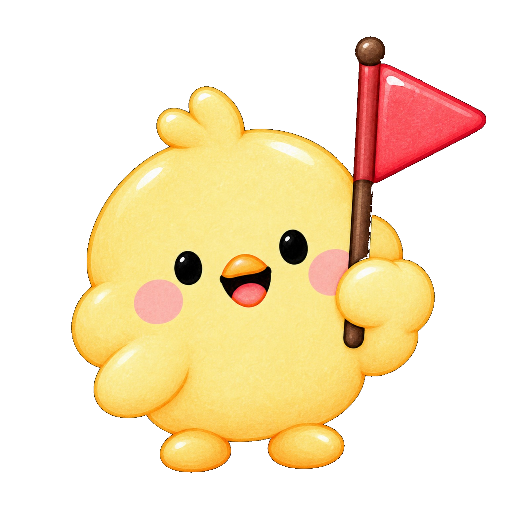
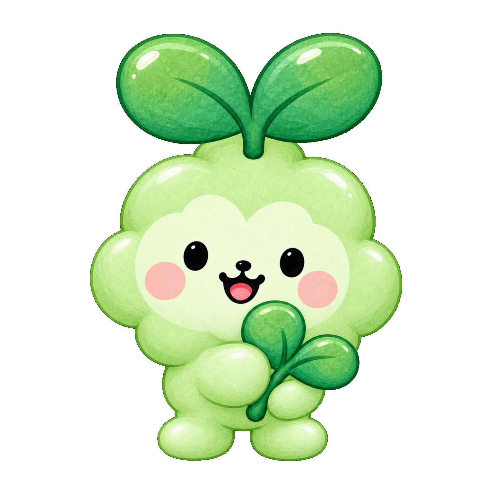

🎮 게임 · 활동 찾아보기
모아의 다섯 정원
오늘 해보고 싶은 활동은 무엇인가요?
목표에 맞는 정원을 고르고, 이미 만들어진 게임부터 바로 이용할 수 있어요.
정원은 활동의 주요 목적으로 나눈 분류예요. 하나의 게임에 주의·기억·문제해결 등 여러 기능이 함께 사용될 수 있습니다. 정원 순서는 능력이나 난이도의 순위가 아니에요.
모아의 인지정원 · 21개 게임
인지정원
시각·청각 정보에 주의를 기울이고, 구별하고, 기억하고, 반응을 조절하는 활동
모아의 마법 꽃밭 🌰주먹으로 도토리를 잡고 손을 펼치면 꽃이 피어요. 손가락 놀이도 함께 있어요.

모아 구조대!무전을 듣고 숲속에 숨은 친구를 찾아 구조차로 데려와요.
기억꽃길 이어가기주문표의 색과 동물 순서를 기억해 피크닉 바구니에 담아요. 쌍둥이 모양 찾기위에 나온 모양과 같은 친구를 찾아요. 꽃만 쏙쏙 찾기돌과 잎 사이에서 꽃만 골라 모아요. 잎사귀 숨은친구잎사귀를 열어 숨어 있는 친구를 찾아요. 반짝이 길 따라가기반짝이는 곳을 순서대로 눌러 길을 완성해요. 초록불에 톡!빨간불에는 기다리고 초록불이 켜지면 모아를 안전하게 건너게 해요. 정원 안에 별 심기정해진 울타리 안을 눌러 별을 심어요. 하나씩 깨우기여러 동그라미를 빠뜨리지 않고 하나씩 깨워요. 숲속 장면 탐정숲속 장면이 달라졌어요. 어느 자리에 변화가 있었는지 찾아요. 꽃과 단서 찾기잎과 돌 사이에서 꽃을 빠뜨리지 않고 찾아요. 정원 지도 따라 놓기보기에 있는 꽃의 위치를 살피고 같은 자리에 심어요. 블록 건축가샘과 함께 블록이 맞닿는 자리를 찾아 정원을 완성해요. 친구 이름 탐정동물과 색을 충분히 보고 생각한 뒤 정확하게 대답해요. 꽃자리 기억하기꽃의 위치를 기억하고 가려진 뒤 같은 자리에 표시해요. 정원길 쓱싹 칠하기정해진 영역 안을 움직이며 길을 채워요. 시든 꽃 깨우기시든 꽃을 하나씩 찾아 눌러 모두 피워요.꼬인 신호 구조대잘못된 안내를 알아차리고 멈춰서 다시 확인해요. 우리 교실 이사작전지시를 듣고 물건의 위치를 찾아 교실을 정리해요. 바뀐 준비물 찾기기억한 목록에서 바뀐 준비물을 반영해요.모아의 생각정원 · 3개 게임
생각정원
주어진 단서를 연결하고 규칙을 바꾸거나 공간 관계를 머릿속에서 생각해보는 활동
모아의 학습정원 · 기존 4개 게임 + 숫자 숲
학습정원
글자와 문장을 익히고, 일상에서 배운 내용을 활용하는 활동
모아의 음악정원 · 3개 활동
음악정원
박자와 리듬을 느끼고, 리코더 운지와 박자에 맞춰 부는 바람놀이를 연습하는 활동
모아의 마음정원 · 3개 활동
마음정원
감정 표현·관계·쉼을 주제로 확장하는 공간. 지금은 바람 세기와 길이를 조절해보는 놀이부터 연결해두었어요.
감정·관계 상황을 살피는 새 게임과 바람의 세기·길이를 조절하는 활동을 함께 이용할 수 있어요. 박자에 맞춰 불기는 음악정원에 있습니다. 호흡놀이는 감정조절 치료 효과를 보장하지 않아요.